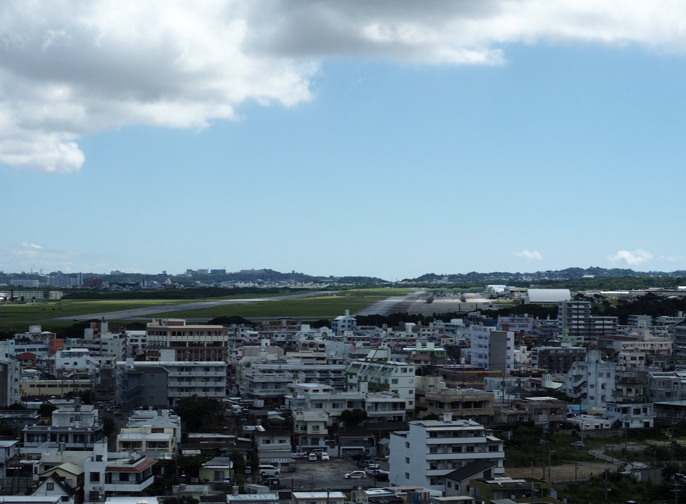
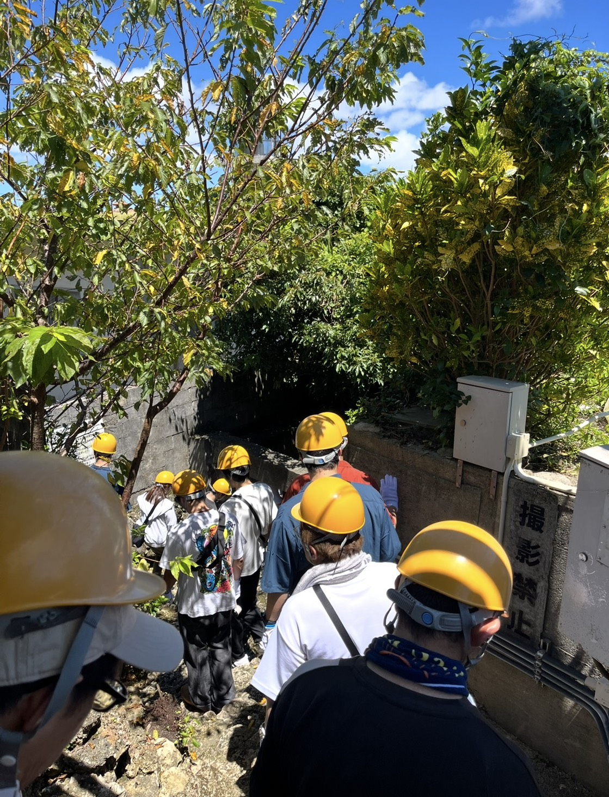
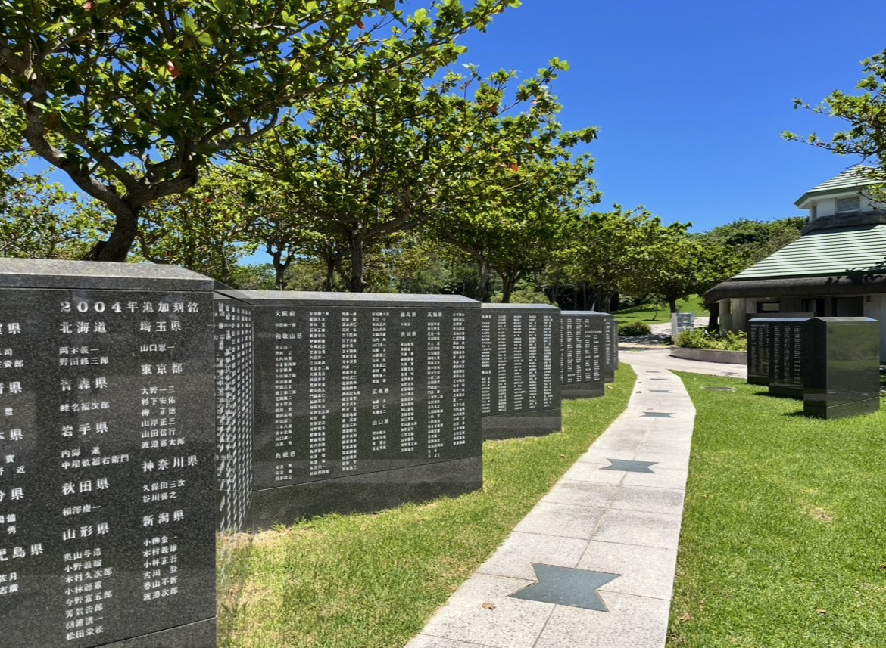
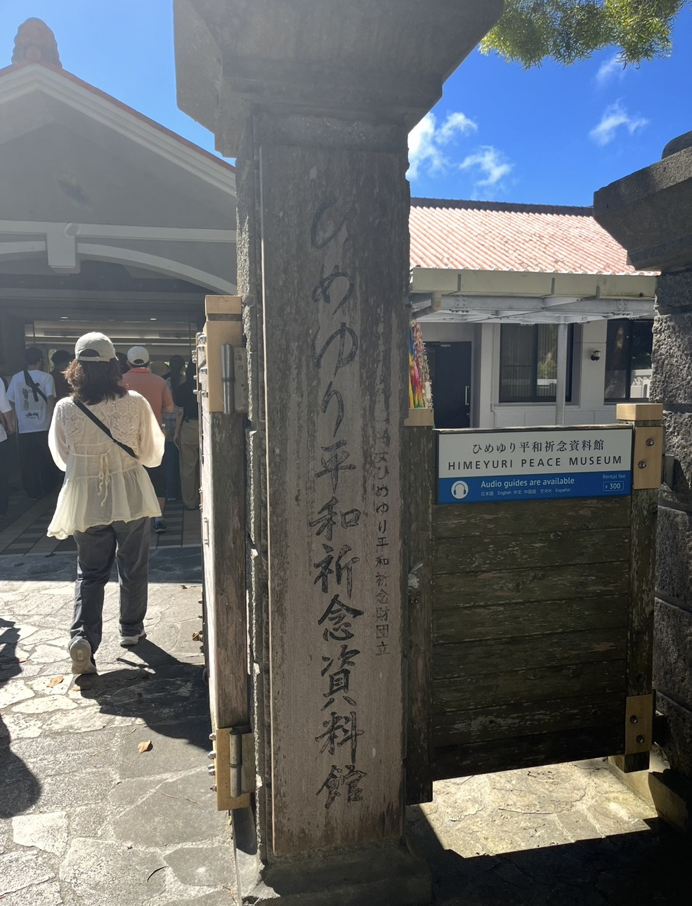
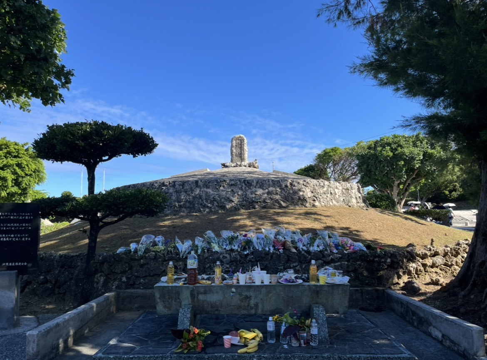
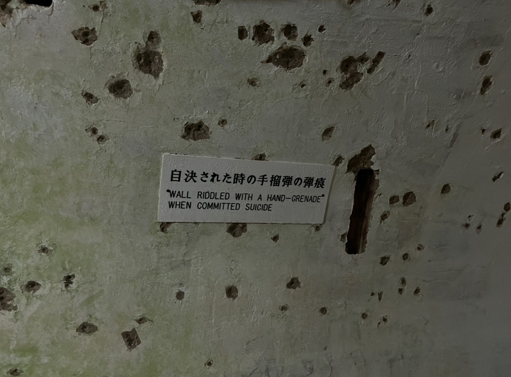

こんにちは、小泉しんぺいです。
前編に続き、後編をお届けします。沖縄2日目は「ピースウォーク」として、戦争関連地や平和祈念資料館を歩いて回りました。各地の特徴と、実際に行ってみた感想を記します。
嘉数高台（かかずたかだい）
宜野湾市にある高台で、沖縄戦において「嘉数の戦い」と呼ばれる16日間の激戦が行われた場所です。弾痕が残ったままの塀や陣地壕、トーチカ（コンクリート製の拠点）などが今も残っており、現在は展望台と慰霊の塔が建てられています。
展望台からは普天間基地を見渡すことができました。普天間基地は住宅街のど真ん中にあり、基地の周囲には学校や病院も視認できます。米軍のヘリ操縦練習に使われている基地であることから墜落事故が絶えず、「世界一危険な基地」と言われています。ニュース等でなんとなくは知っていましたが、直接見てみると、本当に危険な立地であることを実感しました。

嘉数高台から見た普天間基地。住宅街のど真ん中に滑走路が広がっています。糸数アブチラガマ
今回、ここが一番印象的な場所だったかもしれません。
自然の鍾乳洞の内部をさらに削って作られた壕で、もともとは避難場所でしたが、陸軍病院の分室にもなり、多くの兵が運び込まれたそうです。
空気孔の光が届かない奥の空間では、私たちが見学した際に「暗闇体験」として懐中電灯を一斉に消すという体験をしたのですが、文字通り本当に真っ暗でした。当時は生還が絶望的な負傷兵が運び込まれたそうです。暗闇で死を待つ負傷兵たちの精神状態は、想像を絶するものだったと思います。
煙が出るため炊事もできず、便所は約600名に対して大鍋のようなものが3つしか無く、空気孔からは火炎放射や爆撃などの攻撃を受ける——そんな過酷な状況で、最終的な生存者は50名ほどだったそうです。本当に胸が痛くなる場所でした。

ガマの内部は撮影禁止。入口前にて。平和記念公園（沖縄県平和祈念資料館）
平和記念公園は、翌日に式典を控えていたため、準備の真っ最中でした。
平和の礎（いしじ）には、沖縄戦で亡くなった人々の名前が24万人以上刻まれていました。この刻銘者の数は、のちのち判明する方がいることから毎年増えていきます。今年は新たに95名の名前が増えたそうです。遺族が名前を探して花を手向けている場面にも遭遇しました。

平和の礎。沖縄戦で亡くなった24万人以上の名前が刻まれています。資料館には、かなり生々しい展示も多く、沖縄戦の壮絶さを痛感しました。2年前の平和学習で長崎へ行きましたが、原子爆弾とはまた異なる種類の地獄であると感じました。
展示内容は幅広く、軍による統制、愛国心の強要など、色々と思うところはありましたが、特に「やりすぎだ」と感じたのは「方言の禁止」や「髪型の統制」、「“珍奇な名は改めよ”という内容の新聞」など、今の日本とはかけ離れている部分でした。外来語も禁止されており、ブレーキ→制動践板、ハンドル→操行転把、ピアノ→鋼琴など、全く聞き慣れない言葉に変換していたそうです。
ひめゆりの塔（ひめゆり平和祈念資料館）
沖縄県立女子師範学校と沖縄県立第一高等女学校の生徒、および教師で構成された「ひめゆり学徒隊」は、主に看護要員として戦争に動員されました。
生徒たちはみんな「日本軍は勝っている」と思い込んだ状態で駆り出され、まさか病院に砲撃されるなどとは思ってもいなかったそうです。県立第一高校ということもあり、学業の面においても非常に優秀な学生たちでした。
敗戦が濃厚になった6月18日、ひめゆり学徒隊に突如解散命令が出され、混乱・絶望による自決が急増し、結果的に解散命令からの数日間で80%以上が亡くなったとのことです。あまりにも悲しい……。
生存者による証言ビデオでは、「兵隊が亡くなるときは“天皇陛下万歳”と言う」と学校で教わったのに、実際は最期に「お母さん」と言って亡くなる兵士が多いことについて、当時は洗脳に近い教育を受けていたため「なぜだろう」と思ってしまった——という映像があり、複雑な気持ちになりました。
また、当時の戦陣訓の一節「生きて虜囚の辱めを受けず」という言葉のせいで、捕虜になれば生き延びることができたのに、結果的に自決に追い込まれた人が大勢いたそうです。行き過ぎた教育・戦陣訓であると感じます。

ひめゆり平和祈念資料館の入口にて。魂魄の塔（こんぱくのとう）
魂魄は「こんぱく」と読みます。戦後、周辺に散乱していた3万5千余柱の遺骨を納めたとされる慰霊碑で、金城和信さんによって建てられました。
金城さんは、自身の娘さんがひめゆり学徒隊として命を落としており、ひめゆりの塔も金城さんが建立しました。
魂魄の塔の周辺には、北海道・奈良・大分・広島など、都道府県別の慰霊碑もありました。人々の平和を願う気持ちが感じ取れる場所でした。

魂魄の塔。たくさんの花や供え物が手向けられていました。旧海軍司令部壕
最終日は、自由時間を利用してピースウォークとは別で、一人で「旧海軍司令部壕」へ行きました。
手で掘った壕の中に4,000人の日本兵がいて、沖縄戦では海が包囲されていたため、海兵隊は手製の槍で突撃するしかなく、突撃した者の大半が戻ってこなかったそうです……。
壕の中では、横たわって休息することもできず、兵士たちは立ったまま寝ていたとのことです。司令官室付近の空間には、幹部が自決した際の手榴弾の破片が、今もくっきりと残っていました。兵士たちも極限状態であったことが見て取れました。

司令官室付近の壁に、今も残る自決時の手榴弾の弾痕。全体を通して
私は「英霊」という言葉があまり好きではありません。「英」は「ひいでる」という意味です。
沖縄戦は、日本が沖縄を捨て駒にしたことで、死ぬ必要のなかった人たちが沢山亡くなりました。彼らは当然、英雄になろうなどとは全く考えておらず、ただただ悲しみと絶望の中で自決・戦死しました。その決意に対して尊敬の念を抱くのは自由かもしれませんが、私には、異常な状態になっていた日本の政治ミスによる被害者であったように思えます。沖縄に眠る戦死者に対して哀悼の意を込め、この文章を書いています。
殺傷能力のある武器の輸出なんかしている場合ではありません。
今回、久しぶりに沖縄へ行き、三線の音がのんびり響き、歌や踊り、美味しい食べ物、綺麗な海に囲まれた平和な島だなぁ、と改めて感じました。この平和がいつまでも続くことを、心の底から願い、行動していきます。
👈 1日目の学習会・前泊博盛教授の講演については、前編でご報告しています。あわせてぜひご覧ください。